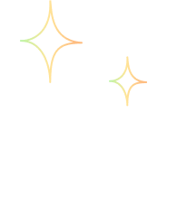
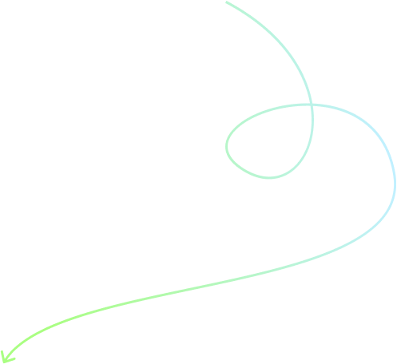
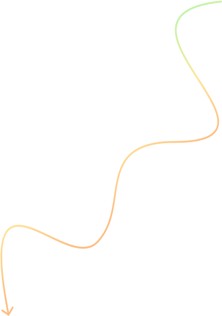

Skills
Design Strategy
Service Design
Design System
User Research
UX Design
UI Design
Motion & Interactions
My design journey
I started my career studying graphic design in 2006
The first time I really came into contact with design I was around five years old. Since I was little I liked to draw Ninja turtles on the wall.
School
2006 - 2010
I started studying at the design school of Duoc UC in Santiago
In my early years, I explored different styles and met great designers.
I was very good at the interaction and web design courses
I really liked the power of design and illustration to tell stories
I arrived to do my internship and stayed a couple of years as a web designer
Mediastream
2010 - 2013
While I was finishing my studies, Mediastream gave me the opportunity to work in a great team, with projects for big brands.
I was lucky to work with @jorlo, one of the best designers I know and he was a great mentor and best friend.
Mediastram is one of the most important streaming companies in LATAM
I designed digital experiences for Platzi, Claro, Canal 13, TVN & internal products.
At the same time I started a new brand with friends.
420seeds
2013 - 2016
I enjoyed creating designs for manufacturing, like T-shirts, bags and packaging.